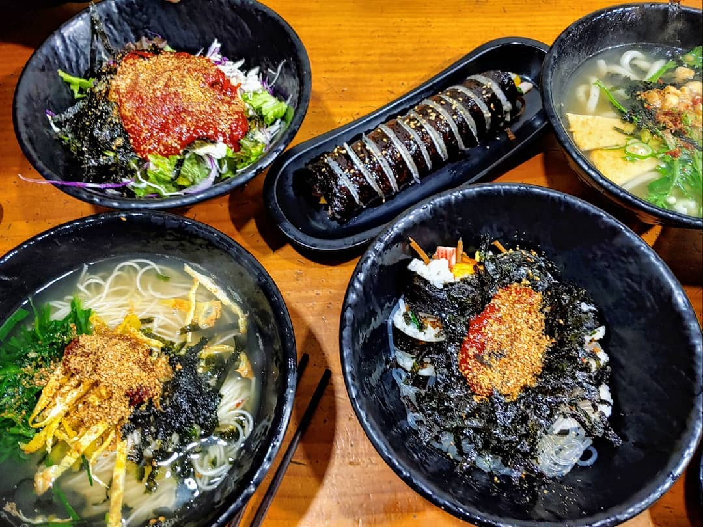
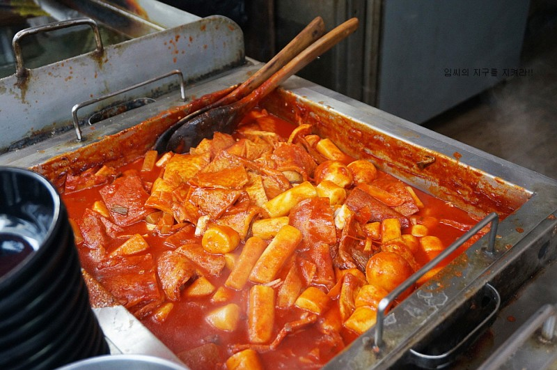
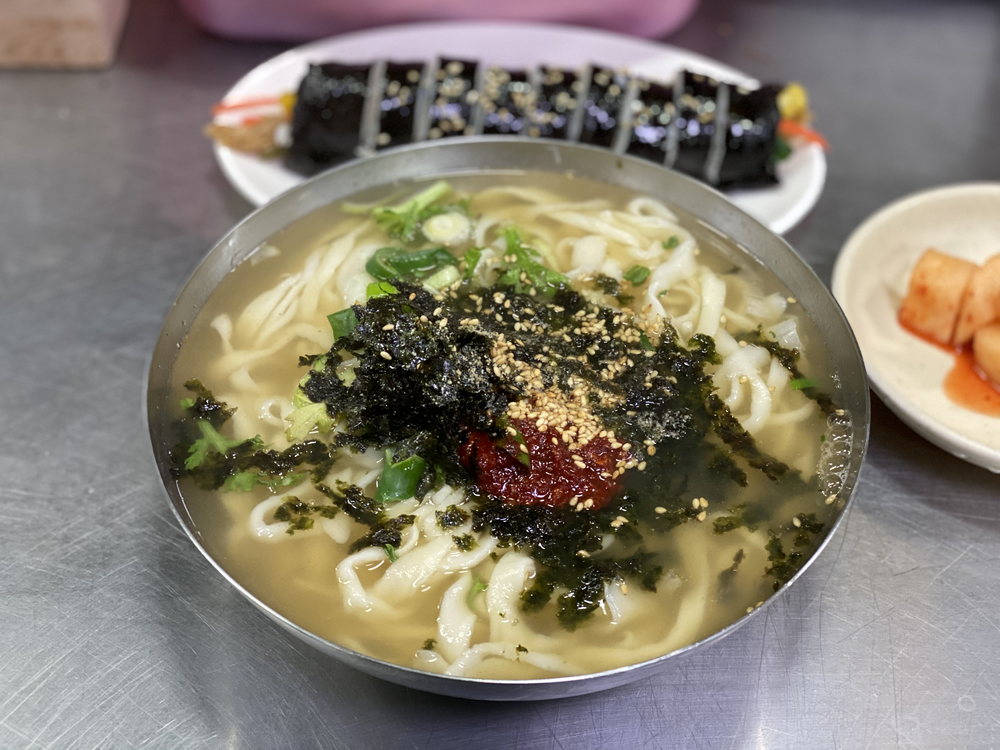
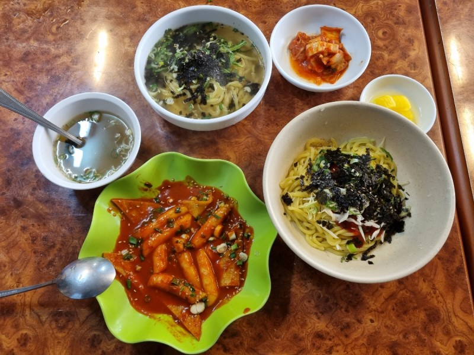
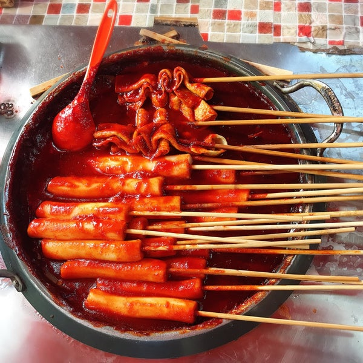

사또분식
- 위치 : 부산광역시 영도구 대교동2가 178-2
- 영업시간 : 매일 04:00~10:00
- 휴무일 : 매주 화요일
- call : 051-415-3764
사또분식에서는 이색적인 김밥을 맛볼 수 있는데요.
바로 김밥을 비벼서 먹는 것입니다. 김밥 한 줄 위에 삶은 당면을 올리고 그 위에
김가루와 양념장을 더한 것이 특징입니다. 매콤한 양념과 우엉, 계란이 가득한 김밥, 쫄깃한 당면의 조화가 좋습니다.
이곳의 대표메뉴 우동 입니다. 칼칼하고 뜨끈한 우동으로 속을 풀기 좋습니다.
바로 김밥을 비벼서 먹는 것입니다. 김밥 한 줄 위에 삶은 당면을 올리고 그 위에
김가루와 양념장을 더한 것이 특징입니다. 매콤한 양념과 우엉, 계란이 가득한 김밥, 쫄깃한 당면의 조화가 좋습니다.
이곳의 대표메뉴 우동 입니다. 칼칼하고 뜨끈한 우동으로 속을 풀기 좋습니다.

천일녹즙
- 위치 : 부산광역시 동래구 온천동 금강공원로26번길 42
- 영업시간 : 매일 08:00~19:30
- 휴무일 : 매달 3번째 월요일 정기 휴무
- call : 0507-1331-5350
분식의 맛은 역시 저렴함이죠. 천일녹즙은 무려 47년 전통의 분식집으로
초등학교 시절 먹던 떡볶이 맛으로 옛 추억으로 떠올리게 합니다
떡볶이 양념에 보리식혜를 섞어 맛을 내 다른 분식집들보다 달콤한 맛이 납니다.
천일녹즙이라는 이름답게 녹즙, 마즙, 인삼즙, 수정과, 식혜 등의 다양한 즙도 판매 중인데요. 카드 결제는 되지 않지만 계좌 이체는 가능하다는 점 참고 바랍니다!
초등학교 시절 먹던 떡볶이 맛으로 옛 추억으로 떠올리게 합니다
떡볶이 양념에 보리식혜를 섞어 맛을 내 다른 분식집들보다 달콤한 맛이 납니다.
천일녹즙이라는 이름답게 녹즙, 마즙, 인삼즙, 수정과, 식혜 등의 다양한 즙도 판매 중인데요. 카드 결제는 되지 않지만 계좌 이체는 가능하다는 점 참고 바랍니다!

자매분식
- 위치 : 부산 동래구 동래시장길 14
- 영업시간 : 매일 11:00~21:00
- 휴무일 : 없음
- call : 051-557-4252
분식집에 떡볶이만 있다고 생각하면 오산입니다.
손칼국수 맛집 자매분식 또한 현지인들에게 유명한 분식집인데요.
칼국수, 찹쌀수제비를 비롯해 메밀콩국수, 냉국수 등 여름 하면 떠오르는 분식들을 팔고 있습니다. 김밥과 뜨끈한 칼국수와 함께 먹으면 별미입니다.
멸치 국물이 시원하고 면이 쫄깃쫄깃 합니다. 깍두기와 함께 먹으면 심심한 맛으로 느껴질 수 있는 칼국수를 더욱 맛있게 먹을 수 있습니다.
카드 결제는 안되지만 현금이나 계좌 이체는 가능하다는 점 참고 바랍니다!
손칼국수 맛집 자매분식 또한 현지인들에게 유명한 분식집인데요.
칼국수, 찹쌀수제비를 비롯해 메밀콩국수, 냉국수 등 여름 하면 떠오르는 분식들을 팔고 있습니다. 김밥과 뜨끈한 칼국수와 함께 먹으면 별미입니다.
멸치 국물이 시원하고 면이 쫄깃쫄깃 합니다. 깍두기와 함께 먹으면 심심한 맛으로 느껴질 수 있는 칼국수를 더욱 맛있게 먹을 수 있습니다.
카드 결제는 안되지만 현금이나 계좌 이체는 가능하다는 점 참고 바랍니다!

선화당
- 위치 : 부산 동구 초량로 63
- 영업시간 : 매일 09:00~18:00
- 휴무일 : 없음
- call : 051-468-5217
모든 메뉴가 단돈 2,000원인 곳 바로 선화당입니다.
이곳은 우동, 쫄우동, 튀김우동, 비빔우동 등 다양한 우동을 파는 우동 맛집이며
떡볶이와 찐만두도 판매합니다. 꼭 먹어봐야 하는 메뉴는 바로 팥빙수입니다.
일반 팥빙수, 팥크림 두 종류가 있는데, 팥크림은 아이스크림에 팥이 올라가고 팥빙수는 간 얼음에 팥을 올려서 나옵니다.
카드, 계좌이체는 되지 않기 때문에 현금을 미리 들고 가시는 것을 추천 드립니다.
이곳은 우동, 쫄우동, 튀김우동, 비빔우동 등 다양한 우동을 파는 우동 맛집이며
떡볶이와 찐만두도 판매합니다. 꼭 먹어봐야 하는 메뉴는 바로 팥빙수입니다.
일반 팥빙수, 팥크림 두 종류가 있는데, 팥크림은 아이스크림에 팥이 올라가고 팥빙수는 간 얼음에 팥을 올려서 나옵니다.
카드, 계좌이체는 되지 않기 때문에 현금을 미리 들고 가시는 것을 추천 드립니다.

옥당분식
- 위치 : 부산 동래구 사직북로28번길 101
- 영업시간 : 월-토 10:30~19:00
- 휴무일 : 매주 일요일
- call : 010-3561-9386
부산에는 떡볶이 꼬치도 있는데요. 매콤하게 양념이 된 떡을 꼬치에
끼워 먹을 수 있다는 점이 상당히 이색적이며, 양념 색깔은 쨍한 빨간색이지만
의외로 맵지 않고 달달해 아이들도 쉽게 먹을 수 있는데요.
이곳의 오뎅 튀김은 오뎅 꼬치를 튀겨서 설탕에 묻힌 후 머스타드 케첩을
바른 것인데요. 갓 튀긴 오뎅의 바삭함과 소스의 달콤새콤함이 잘 어우러져
많은 분들이 사랑하는 메뉴입니다. 단, 카드 결제는 되지 않습니다.
끼워 먹을 수 있다는 점이 상당히 이색적이며, 양념 색깔은 쨍한 빨간색이지만
의외로 맵지 않고 달달해 아이들도 쉽게 먹을 수 있는데요.
이곳의 오뎅 튀김은 오뎅 꼬치를 튀겨서 설탕에 묻힌 후 머스타드 케첩을
바른 것인데요. 갓 튀긴 오뎅의 바삭함과 소스의 달콤새콤함이 잘 어우러져
많은 분들이 사랑하는 메뉴입니다. 단, 카드 결제는 되지 않습니다.